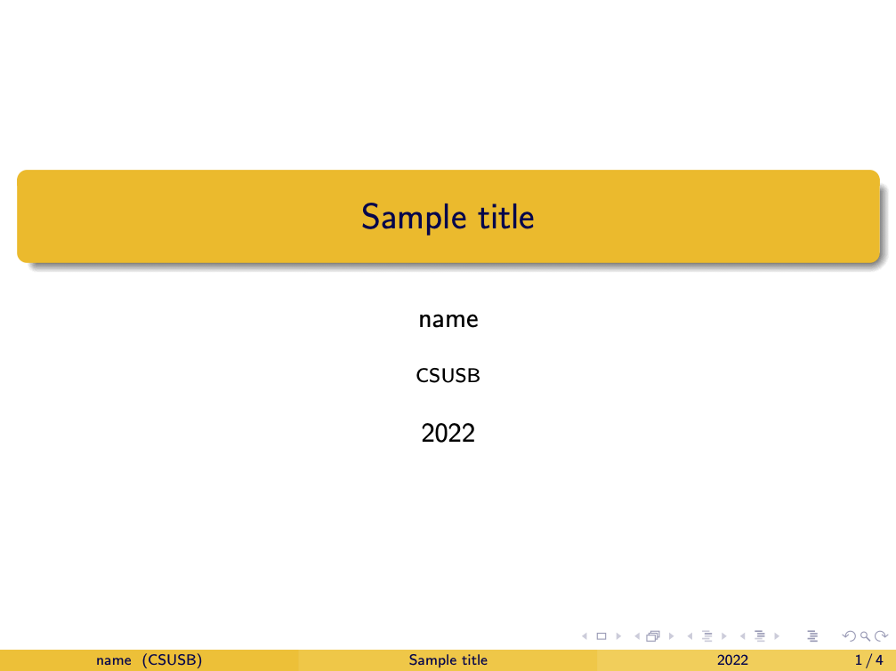

Oct 31th, 2022¶
Do to¶
Go over the schedule
Go over the grading scheme
Brief introduction to the beamer class, https://www.overleaf.com/learn/latex/Beamer
More thorough treatments starts here, https://www.overleaf.com/learn/latex/Beamer_Presentations%3A_A_Tutorial_for_Beginners_(Part_1)%E2%80%94Getting_Started
Brief introduction to Beamer class¶
The LaTeX Beamer class creates presentation-style documents such as Microsoft PowerPoint or Google Slide.
In the most commonly used LaTeX classes, such as article or amsart (this is what we use in class), LaTeX handles page separation.
In the Beamer class, this is done by \begin{frame} and \end{frame}.
That is to have the following outcome
{kind=link}
we need to put the content in the frame environment.
Note
In these notes, we used the theme Madrid with themecolor crane.
Preamble and title page¶
Here is the minimal required code to use the Beamer class and to have the title page.
\documentclass{beamer}
\usetheme{Madrid} % Use the one you like
\usecolortheme{crane} % Use the one you like
\title{Sample title}
\author{name}
\institute{CSUSB}
\date{2022}
\begin{document}
\frame{\titlepage} %This creates the first page
\end{document}
{kind=link}
They are self-explantory. For a more advanced setting of the title page, refer to the title page on [here](https://www.overleaf.com/learn/latex/Beamer).
Block environments¶
The Beamer class is equipped with several predefined commands and environments. It is worth remembering that we do not need to define the theorem environment. Here is a list of predefined commands.
block
alertblock
example
theorem
To have a named environment, replace {~} with desired names.
\begin{block}{~}
Sample block
\end{block}
\begin{alertblock}{~}
Sample alertblock
\end{alertblock}
\begin{examples}{~}
Sample example
\end{examples}
\begin{theorem}{~}
Sample theorem
\end{theorem}
\begin{theorem}[{Big Theorem}]
Sample named theorem
\end{theorem}
\end{frame}
{kind=link}
Itemize and enumerate¶
Lastly, Beamer comes with predefined symbols for the itemize and enumerate environments.
Note
To override a symbol for an item, we can use \item [My symbol]. For more about override, the symbols refer to
Here is a sample code and outcome.
\documentclass{beamer}
\begin{document}
\begin{frame}{Itemize and enumerate}
\begin{itemize}
\item A
\begin{itemize}
\item B
\begin{itemize}
\item C
\end{itemize}
\end{itemize}
\end{itemize}
\begin{enumerate}
\item A
\begin{enumerate}
\item B
\begin{enumerate}
\item C
\end{enumerate}
\end{enumerate}
\end{enumerate}
\end{document}
{kind=link}